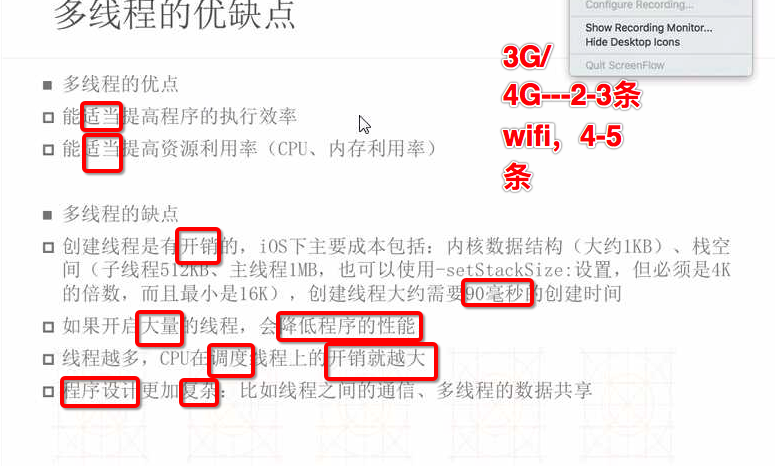
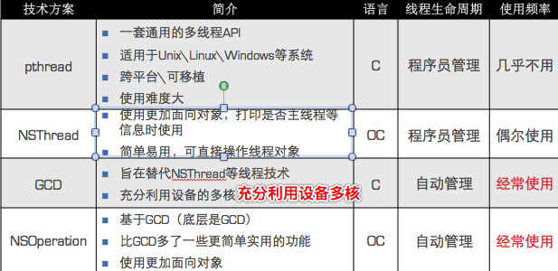
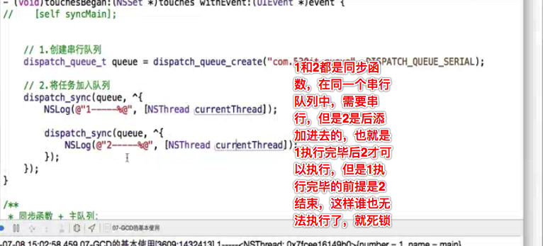
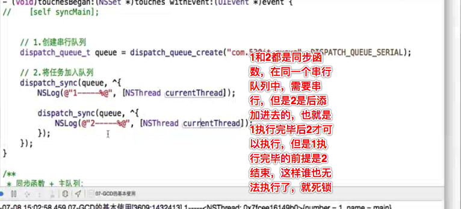

- 多线程的优缺点 
- 多种开启线程方式的对比 
线程同步：
- 多线程默认是并发(异步)，也就是同时执行，但是为了防止多个线程多同一个资源进行抢夺，所以有了互斥锁，让线程同步，也就是在一条线上按照顺序执行
- 互斥锁的使用前提：多条线程抢夺同一块资源
- 互斥锁对象：保证全局唯一，使用self就可以满足需求
- 互斥锁优缺点：
- 优点：可以有效防止多条线程抢夺同一块资源造成的数据安全问题
- 缺点：需要消耗大量的CPU资源
主线程
- 显示/刷新UI界面
- 处理UI事件
- isMainThread 是否是主线程
- 使用注意
- 别将比较耗时的操作放到主线程中
- 耗时操作会卡住主线程，严重影响UI的流畅度，给用户一种“卡”的坏体验
子线程
- 处理耗时操作
- 刷新UI一定要在主线程操作
并行：
- 多个线程一起执行任务，指的是同一时间处理多个任务的能力
- 并发：
- 现象，同一时间多个任务同时执行


- 同步函数是需要立即执行的，异步函数会隔一下再执行
线程的优先级
- 取值范围 0-1，double，默认0.5
- 优先级高的线程一定是先执行完毕，cpu调度它的概率比较大
线程的状态
- 创建后，放入可调度线程池
- 线程调用start后，进入就绪状态，等待cpu调用
- 被调用后进入运行状态，当cpu又去调用其他线程，那么当前线程继续进入就绪
- 调用了sleep方法或者等待同步锁，那么进入阻塞状态
- sleep到时\得到同步锁那么继续进入就绪状态
- 线程任务执行完毕 异常\强制退出就会销毁，进入死亡状态，销毁后永久无法复活
NSThread
- NSThread
- 一个NSThread对象就代表一条线程
- 创建完毕线程后别忘记start线程
[NSThread currentThread];//获得当前线程
+ (NSThread *)mainThread; // 获得主线程
- (BOOL)isMainThread; // 是否为主线程
+ (BOOL)isMainThread; // 是否为主线程
//创建线程后自动启动线程
[NSThread detachNewThreadSelector:@selector(run) toTarget:self withObject:nil];
//隐式创建并启动线程
[self performSelectorInBackground:@selector(run) withObject:nil];
以上方式:
优点：简单快捷
缺点：无法对线程进行更详细的设置
GCD
GCD
- 是苹果专门为多核的并行运算提出的解决方案
- 纯C语言
- 会自动利用更多的CPU内核
- 会自动管理线程的生命周期
- 核心就是定制任务(执行什么操作)和将任务添加到队列(存放什么任务)
- 任务的取出遵循FIFO(先进先出)原则
GCD中有2个用来执行任务的常用函数(函数的作用是用来执行任务的)
//通俗讲就是将block任务放到queue队列中，它会自动从队列中取出任务放到线程中执行，具体是放到主线程还是子线程则根据队列类型决定- dispatch_sync 同步函数
- 只可以在当前线程中执行任务,不具备开启新线程能力
- dispatch_async 异步函数
- 可以在新的线程中执行任务，具体开启新线程的能力
- dispatch_sync 同步函数
GCD中的队列(存放任务)可以分为2大类型
- 并发队列
- 可以让多个任务并发（同时）执行（自动开启多个线程同时执行任务
- 并发功能只有在异步（dispatch_async）函数下才有效
- 并发队列
//使用dispatch_queue_create函数创建队列
//队列对象的类型：dispatch_queue_t
dispatch_queue_create(const char *label, // 队列名称
dispatch_queue_attr_t attr); // 队列的类型
//创建并发队列,最好给队列命名，方便后续调试查找
dispatch_queue_t queue = dispatch_queue_create("com.520it.queue", DISPATCH_QUEUE_CONCURRENT);
//GCD默认已经提供了全局的并发队列，供整个应用使用，可以无需手动创建
使用dispatch_get_global_queue函数获得全局的并发队列
dispatch_queue_t dispatch_get_global_queue(
dispatch_queue_priority_t priority, // 队列的优先级
unsigned long flags); // 此参数暂时无用，用0即可
全局并发队列的优先级
#define DISPATCH_QUEUE_PRIORITY_HIGH 2 // 高
#define DISPATCH_QUEUE_PRIORITY_DEFAULT 0 // 默认（中）
#define DISPATCH_QUEUE_PRIORITY_LOW (-2) // 低
#define DISPATCH_QUEUE_PRIORITY_BACKGROUND INT16_MIN // 后台
- 串行队列
- 让任务一个接着一个地执行(一个任务执行完毕后，再执行下一个任务)
//GCD中获得串行队列有2种途径
第一种：使用dispatch_queue_create函数创建串行队列
// 创建串行队列（队列类型传递NULL或者DISPATCH_QUEUE_SERIAL）
dispatch_queue_t queue = dispatch_queue_create("com.520it.queue", NULL);
*************************
第二种：使用主队列（跟主线程相关联的队列）
主队列是GCD自带的一种特殊的串行队列
1)主队列:
1)所有在主队列中的任务都会被放在主线程中执行
2)主队列中的任务在执行之前会先检查主线程的状态,如果发现主线程当前正在执行任务那么会暂停队列中任务的调度
2)同步:必须要得到该方法的返回值才能够继续往下执行--->如果我没有执行完毕,那么后面的将永远无法执行
3)异步:可以继续往下执行,等前面的任务执行完毕之后再回头执行-->我无所谓,你可以先执行后面的代码
使用dispatch_get_main_queue()获得主队列
dispatch_queue_t queue = dispatch_get_main_queue();

- 如果在主线程中通过同步函数往主队列添加任务会造成死锁
- 同步函数是需要立即执行的，异步函数会隔一下再执行
- 异步函数里面可以使用同步函数往主队列添加任务不会造成死锁
- 因为异步函数可以开启新的线程，只要整个任务是在其他线程里面，那么即使里面的是通过同步函数向主队列添加任务也不会造成死锁
在主线程中通过同步函数往主队列里面添加任务造成死锁的原因：
首先我们知道主队列里面的任务默认是在主线程中执行的，
而且每次主队列执行任务之前都会先检查主线程的状态，如
果发现当前主线程有任务正在执行，那么就会暂停队列里面
的任务执行，由于我们当前主线程正在处理touchBegin方法
里面的[self syncMain]这个任务，再加上现在主队列里面放
的是同步函数，同步函数的特点是需要立即在当前线程执行
当前的任务，不执行完后面的都无法执行，(也就是说同步函数
不执行完，这个syncMain方法就无法执行完，syncMain方法执
行不完那么当前主线程正在执行的任务就无法结束，任务无法
结束那么主队列就会一直暂停自己的调度，那么同步函数就永
远执行不完)现在同步函数需要先执行，但是主队列发现主线程
是有任务的，主队列在主线程处理完[selfsyncMain]这个任务
之前会暂停自己里面的任务调度，那么就会造成谁也无法进行
下一步的情况，就会造成死锁
*************************
换句话说，主队列发现里面有同步函数，让同步函数先执行，
但是同步函数一看你是主队列，你老大你先执行，这样你让
我，我让你，一直让下去谁也无法执行，就造成了死锁
 

- 一次性代码--static dispatch_once_t
- 在整个程序运行过程中，block代码块只会被执行一次
- 本身是线程安全的
- 应用场景：单例
- 栅栏函数--dispatch_barrier_async
- 可以控制并发队列里面任务的执行顺序，栅栏函数之前的任务执行完毕之后栅栏函数后面的任务才可以被执行
- 不能使用全局并发队列，自己创建的并发队列才可以
- 延迟函数--dispatch_after
- 延迟的时间是以纳秒为单位的
- 快速迭代--dispatch_apply
- 不可以传主队列